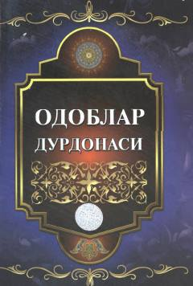

ODImom Buxoriyning hadislaridan yosh avlod uchun odob-axloq saboqlari.
Ushbu kitob Imom Buxoriyning «al-Adab al-mufrad» asaridan yosh avlodga mo'ljallangan hadislarni tanlab, sharh va foydalari bilan birga taqdim etadi. Muallif Olimxon Isaxon o'g'li hadislarni o'quvchiga tushunarli tilda izohlagan. Kitob Imom Buxoriy xalqaro ilmiy-tadqiqot markazi tomonidan 2018 yilda Samarqandda nashr etilgan.